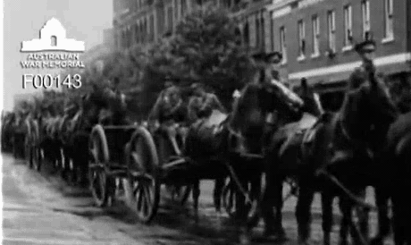
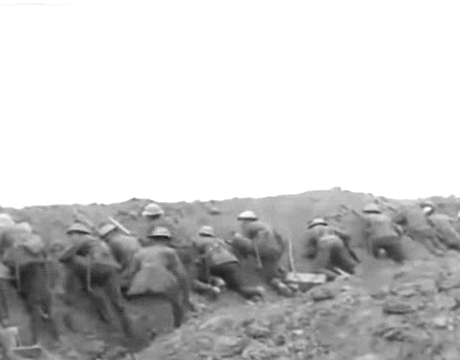
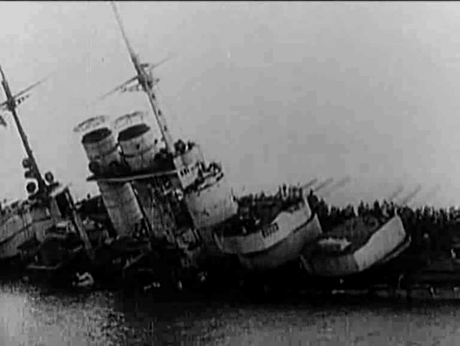
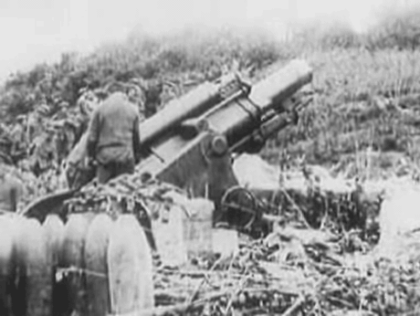
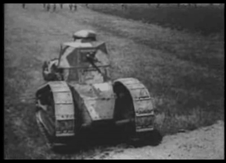
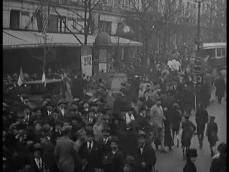

Германия — Великобритания
Борьба за мировое экономическое лидерство, колонии и господство на море.
Причины, ход боевых действий, новые технологии, влияние на Туркестан и геополитические итоги глобального конфликта (28 июля 1914 — 11 ноября 1918).
«Война, которая должна положить конец всем войнам» — Герберт Уэллс, 1914 г.
Первая мировая война стала закономерным результатом глубоких империалистических противоречий между ведущими державами мира в борьбе за передел колоний, рынков сбыта, источников сырья и сфер политического влияния.
К началу XX века территориальный раздел мира между старыми колониальными державами — Великобританией и Францией — был в основном завершён. Однако стремительно развивавшиеся молодые индустриальные державы, прежде всего Германская империя, обогнав Британию по темпам промышленного роста, требовали «места под солнцем» — передела уже занятых колоний и рынков.
Напряжённость усиливалась гонкой вооружений, особенно англо-германским соперничеством на море, а также ростом национализма и милитаризма в европейских обществах. Франция стремилась к реваншу за поражение во франко-прусской войне 1870–1871 годов и возвращению Эльзаса и Лотарингии. Российская и Австро-Венгерская империи остро соперничали за влияние на Балканах.
Особым очагом нестабильности стали Балканы, получившие название «порохового погреба Европы». Ослабление Османской империи и две Балканские войны (1912–1913) резко обострили противоречия между Сербией, опиравшейся на поддержку России, и Австро-Венгрией, аннексировавшей в 1908 году Боснию и Герцеговину.
Борьба за мировое экономическое лидерство, колонии и господство на море.
Спор за Эльзас и Лотарингию, соперничество в Северной Африке (Марокканские кризисы).
Борьба за влияние на Балканском полуострове и судьбу южнославянских народов.
Рост военных бюджетов, создание массовых армий и жёсткие союзнические обязательства, разделившие Европу на два враждебных лагеря.
| Критерий | Антанта («Сердечное согласие») | Тройственный союз (Центральные державы) |
|---|---|---|
| Время оформления | 1904–1907 гг. | 1882 г. |
| Основные участники | Великобритания, Франция, Российская империя | Германская империя, Австро-Венгрия, Королевство Италия (в 1915 г. перешла на сторону Антанты) |
| Присоединившиеся союзники | Сербия, Япония, Италия (1915), Румыния (1916), США (1917) и ещё свыше 20 государств | Османская империя (1914), Царство Болгария (1915) — образовался «Четверной союз» |
| Военно-политические цели | Сохранение колониальных империй и морского господства (Великобритания), возвращение Эльзаса и Лотарингии (Франция), укрепление позиций на Балканах и контроль над Черноморскими проливами (Россия). | Передел колониальных владений, ослабление Великобритании и Франции, установление гегемонии Германии в Европе и контроль над Ближним Востоком, доминирование Австро-Венгрии на Балканах. |
| Стратегические преимущества | Огромные людские и сырьевые ресурсы колоний, господство британского флота на море, экономическая поддержка США. | Центральное географическое положение, развитая сеть железных дорог, высокий уровень боевой подготовки и тяжёлой промышленности Германии. |
Искрой, поджёгшей «пороховой погреб Европы», стало Сараевское убийство, переросшее в стремительный дипломатический Июльский кризис 1914 года.
28 июня 1914 года в Сараево (столице аннексированной Австро-Венгрией Боснии) сербский гимназист Гаврило Принцип, член националистической организации «Млада Босна», застрелил наследника австро-венгерского престола эрцгерцога Франца Фердинанда и его супругу Софию.
Правящие круги Австро-Венгрии, заручившись безоговорочной поддержкой Германии («карт-бланш» кайзера Вильгельма II), использовали трагедию как предлог для разгрома Сербии. 23 июля Вена предъявила Белграду жёсткий ультиматум из десяти пунктов, требовавший фактически отказаться от части государственного суверенитета. Сербия приняла почти все требования, кроме допуска австрийской полиции на свою территорию, но этого оказалось недостаточно.
28 июля 1914 года Австро-Венгрия объявила войну Сербии. Механизм союзнических обязательств запустил цепную реакцию: Россия объявила всеобщую мобилизацию для защиты Сербии, в ответ 1 августа Германия объявила войну России, 3 августа — Франции, а после вторжения германских войск в нейтральную Бельгию 4 августа в войну против Германии вступила Великобритания. Локальный балканский конфликт за неделю превратился в мировую войну.

ПаузаКолонны конной артиллерии и войск отправляются на фронт. Архивная кинохроника, 1916 г.
Военные стратеги всех стран рассчитывали на быструю победоносную кампанию, но уже осенью 1914 года война превратилась в затяжную битву на истощение на множестве фронтов.
Основные сухопутные операции развернулись на Западном фронте (во Франции и Бельгии) и Восточном фронте (от Балтики до Карпат), а также на Итальянском, Балканском, Кавказском и Ближневосточном театрах. Важную роль играла борьба на море, включая британскую блокаду Германии и германскую подводную войну.
Германия действовала по «плану Шлиффена», стремясь за 6–8 недель разгромить Францию ударом через нейтральную Бельгию, а затем перебросить силы против России. Однако в сентябре 1914 года в ходе битвы на реке Марне англо-французские войска остановили немецкое наступление на подступах к Парижу. Этому способствовало и наступление русской армии в Восточной Пруссии, вынудившее Германию перебросить часть дивизий на восток. На Западном фронте установилась изнурительная позиционная (окопная) война.
Германия перенесла главный удар на Восточный фронт: в ходе Горлицкого прорыва русские войска отступили из Польши, Галиции и части Прибалтики («Великое отступление»), однако вывести Россию из войны не удалось. На Западном фронте в апреле 1915 года под бельгийским городом Ипр Германия впервые в истории массированно применила боевой отравляющий газ (хлор). В мае Италия вступила в войну на стороне Антанты, а осенью Болгария присоединилась к Центральным державам.
С февраля по декабрь длилась «Верденская мясорубка» — ожесточённое сражение под французской крепостью Верден, унёсшее сотни тысяч жизней без решающего успеха Германии. Летом 1916 года российская армия провела успешный Брусиловский прорыв, нанеся тяжёлое поражение Австро-Венгрии и спасая союзников. В июле–ноябре прошла битва на реке Сомме (более 1 млн потерь с обеих сторон), где Великобритания впервые применила танки. На море в мае–июне состоялось крупнейшее Ютландское сражение, после которого германский надводный флот уже не решался оспаривать господство Британии.
Неограниченная подводная война Германии и перехваченная «телеграмма Циммермана» подтолкнули США к вступлению в войну на стороне Антанты 6 апреля 1917 года, что обеспечило союзникам подавляющее экономическое и людское превосходство. В то же время Российскую империю потрясли Февральская и Октябрьская революции, ослабившие боеспособность Восточного фронта и поставившие вопрос о выходе России из войны.
3 марта 1918 года Советская Россия подписала сепаратный Брестский мир с Центральными державами, потеряв значительные территории на западе. Высвободив силы, Германия предприняла последнее «Весеннее наступление» во Франции, но была остановлена. Летом и осенью Антанта при поддержке свежих американских войск провела Стодневное наступление. Из войны последовательно вышли Болгария, Османская империя и Австро-Венгрия. После Ноябрьской революции в Германии и отречения кайзера Вильгельма II 11 ноября 1918 года в Компьенском лесу было подписано перемирие — Первая мировая война завершилась.

ПаузаБританская пехота поднимается из траншей в атаку. Кадры из документального фильма «Битва на Сомме», 1916 г.
Срыв немецкого «плана Шлиффена», спасение Парижа и переход к позиционной войне.
Первое массовое применение химического оружия (хлора) в истории войн.
Символ войны на истощение; общие потери превысили 700 тыс. человек, оборона Франции устояла.
Крупнейшее морское сражение войны; сохранение британской морской блокады Германии.
Прорыв австро-венгерской обороны на 80–120 км, ослабление сил Германии под Верденом и в Италии.
Одно из самых кровопролитных сражений (свыше 1 млн потерь); 15 сентября впервые применены танки.

ПаузаАвстро-венгерский дредноут SMS Szent István опрокидывается после торпедной атаки в Адриатическом море, 10 июня 1918 г.
Первая мировая стала первой «тотальной войной» индустриальной эпохи: в неё были вовлечены не только армии, но и вся экономика, наука и гражданское население воюющих государств.
Государства перевели промышленность на военные рельсы, ввели карточную систему, государственное регулирование производства и массовый труд женщин на заводах. Прогресс науки и техники придал войне небывалый разрушительный характер: средства обороны (окопы, колючая проволока, пулемёты) оказались значительно эффективнее прежних способов наступления.
Многокилометровые линии траншей, блиндажей и заграждений из колючей проволоки в сочетании со скорострельными пулемётами (Максим, Виккерс) сделали лобовые атаки пехоты чрезвычайно кровопролитными.
Артиллерия стала главным средством поражения: на её долю пришлось более половины всех боевых потерь. Появились сверхдальнобойные орудия и многодневные «огневые валы».
Созданы Великобританией для преодоления траншей и колючей проволоки. Впервые применены 15 сентября 1916 года на реке Сомме (танки Mark I), а к 1918 году стали массовым оружием прорыва.
От первых самолётов-разведчиков стороны быстро перешли к специализированным истребителям и бомбардировщикам, а также цеппелинам для налётов на города в тылу.
Германские субмарины (U-boot) вели активную охоту на торговые суда Антанты, пытаясь задушить экономику Британии и нарушить трансатлантические поставки.
Хлор, фосген и горчичный газ (иприт, применённый под Ипром в 1917 г.) вызывали тяжёлые поражения дыхательных путей и кожи, породив массовое производство противогазов.

ПаузаЗалп 9,2-дюймовой гаубицы на Западном фронте. Архивная хроника Первой мировой войны, 1916–1918 гг.

ПаузаЛёгкий танк Renault FT в камуфляже преодолевает пересечённую местность. Кинохроника 1918 г.
Хотя линия фронта находилась за тысячи километров от Центральной Азии, Первая мировая война тяжёлым бременем легла на народы Туркестанского края и стала катализатором мощного национально-освободительного движения 1916 года.
С началом войны Туркестан превратился в важнейшую сырьевую базу Российской империи. Из края в огромных объёмах вывозились хлопок (необходимый не только для текстильной промышленности, но и для производства пороха), мясо, скот, юрты, продовольствие и лошади. Одновременно резко выросли налоги и военные сборы, сократились посевы зерновых, цены на хлеб и предметы первой необходимости выросли в несколько раз, поставив тысячи дехканских семей на грань голода.
Переломным событием стал указ императора Николая II от 25 июня 1916 года «О привлечении мужского инородческого населения империи к работам по устройству оборонительных сооружений и военных сообщений в районе действующей армии». Коренное население Туркестана, ранее освобождённое от воинской повинности, обязывалось направить на тыловые работы (мардикерство) около 250 тысяч мужчин в возрасте от 19 до 43 лет. Указ был объявлен в разгар летних полевых работ и в священный месяц Рамадан, а составление списков сопровождалось коррупцией, произволом чиновников и откупом зажиточных слоёв.
Народное возмущение переросло в стихийное антиколониальное восстание 1916 года. 4 июля выступление началось в Ходженте, 11 июля — в Ташкенте, а вскоре охватило Самаркандскую, Ферганскую, Сырдарьинскую и Закаспийскую области. В протестах участвовали дехкане, ремесленники, мардикеры, городская беднота и женщины.
Наиболее организованным и драматичным очагом стало Джизакское восстание, вспыхнувшее 13 июля 1916 года. Под руководством духовного лидера Назирходжи Абдусаламова (Назирходжи-ишана) и Абдурахмана Джевачи восставшие отказались выполнять указ, прервали телеграфную и железнодорожную связь и оказали вооружённое сопротивление. Против них был направлен крупный карательный отряд с артиллерией. К 18–21 июля восстание было жестоко подавлено войсками под общим руководством генерал-губернатора А. Н. Куропаткина: часть Джизака и десятки кишлаков были сожжены, тысячи людей погибли, были арестованы или сосланы, а земли конфискованы. В историю Узбекистана эти события вошли как «Джизакская трагедия».
Первая мировая война радикально перекроила политическую карту мира, разрушила вековые монархии и заложила хрупкую систему международных отношений межвоенного периода.
Война обернулась беспрецедентной гуманитарной и экономической катастрофой. Погибло около 10 миллионов солдат и миллионы мирных жителей, ещё около 20 миллионов получили ранения. Европа утратила роль безоговорочного финансового центра мира, уступив экономическое лидерство Соединённым Штатам Америки, превратившимся из должника в главного мирового кредитора.
Политическая карта Евразии изменилась до неузнаваемости. Прекратили существование четыре великие империи — Российская, Германская, Австро-Венгерская и Османская. На их обломках возникли новые независимые государства: Польша, Чехословакия, Королевство сербов, хорватов и словенцев (Югославия), Финляндия, Австрия, Венгрия, государства Балтии, а позднее — Турецкая Республика и СССР.
Пала в результате революций 1917 года; последовала Гражданская война и образование СССР (1922), а также независимых Польши, Финляндии и стран Балтии.
Ноябрьская революция 1918 года, отречение кайзера Вильгельма II, провозглашение Веймарской республики и тяжёлые условия Версальского мира.
Распалась в октябре–ноябре 1918 года на Австрию, Венгрию, Чехословакию; часть земель вошла в состав Югославии, Польши, Румынии и Италии.
Потеряла арабские владения на Ближнем Востоке (перешли под мандат Британии и Франции); в 1923 году на основе Анатолии провозглашена Турецкая Республика.
Для закрепления итогов войны в 1919–1920 годах прошла Парижская мирная конференция, главным документом которой стал Версальский мирный договор с Германией (28 июня 1919 г.). Германия лишалась всех колоний и части европейских территорий, была обязана выплачивать огромные репарации и сократить армию до 100 тысяч человек. Вместе с Вашингтонской конференцией (1921–1922) эти соглашения образовали Версальско-Вашингтонскую систему. Для предотвращения новых войн была учреждена первая глобальная международная организация — Лига Наций. Однако несправедливые и унизительные условия мира породили в проигравших странах реваншистские настроения, что через двадцать лет привело мир ко Второй мировой войне.

ПаузаЛикующие толпы на бульварах Парижа в день подписания Компьенского перемирия, 11 ноября 1918 г.
Выберите год, чтобы отфильтровать важнейшие события Первой мировой войны и восстания 1916 года в Туркестане.
Убийство австрийского эрцгерцога Франца Фердинанда в Сараево — повод к началу войны.
Австро-Венгрия объявляет войну Сербии; в начале августа в войну вступают Германия, Россия, Франция и Великобритания.
Англо-французские войска останавливают наступление Германии; провал «плана Шлиффена».
Первое массированное применение химического оружия (хлора) на Западном фронте.
Кровопролитное десятимесячное сражение на истощение во Франции.
Крупнейшее успешное наступление русской армии против Австро-Венгрии на Восточном фронте.
Николай II подписывает указ о мобилизации коренного мужского населения на тыловые работы (мардикерство).
Кульминация национально-освободительного восстания 1916 года в Туркестане.
Британская армия впервые использует танки в ходе битвы на реке Сомме.
Соединённые Штаты объявляют войну Германии на стороне Антанты.
Выход Советской России из Первой мировой войны путём подписания сепаратного мира.
Капитуляция Германии и окончание Первой мировой войны; 28 июня 1919 года подписан Версальский мирный договор.